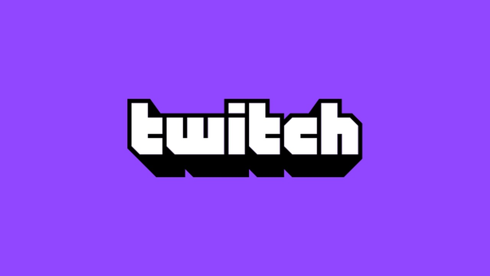

Twitch Wiki
go to categoriesGo to articles

Twitch is an American video live streaming service that focuses on video game live streaming, including broadcasts of esports competitions. In addition, it offers music broadcasts, creative content, and more recently, "in real life" streams. It is operated by Twitch Interactive, a subsidiary of Amazon.com, Inc.[2] It was introduced in June 2011 as a spin-off of the general-interest streaming platform Justin.tv. Content on the site can be viewed either live or via video on demand